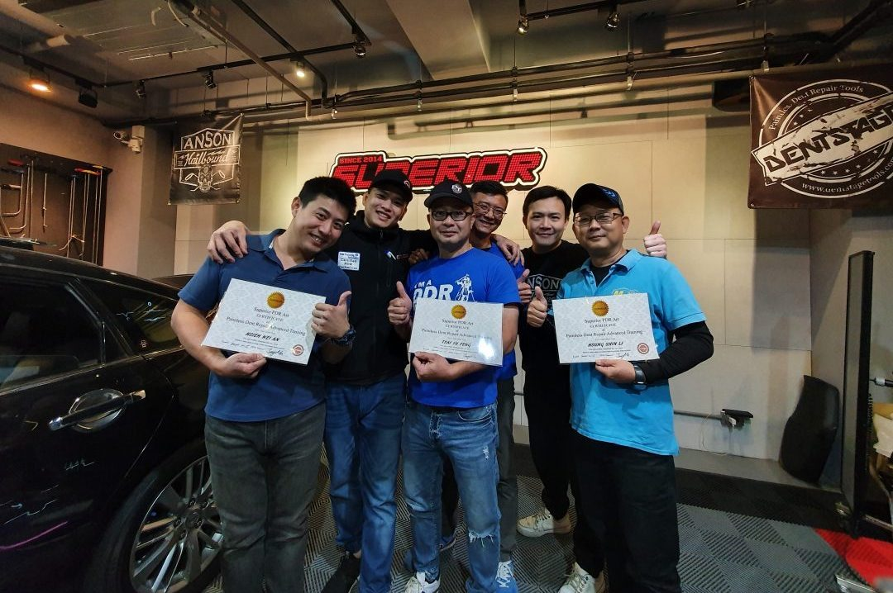
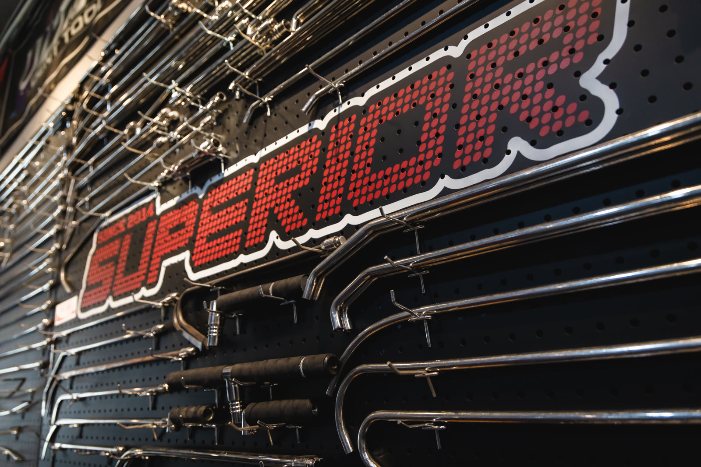
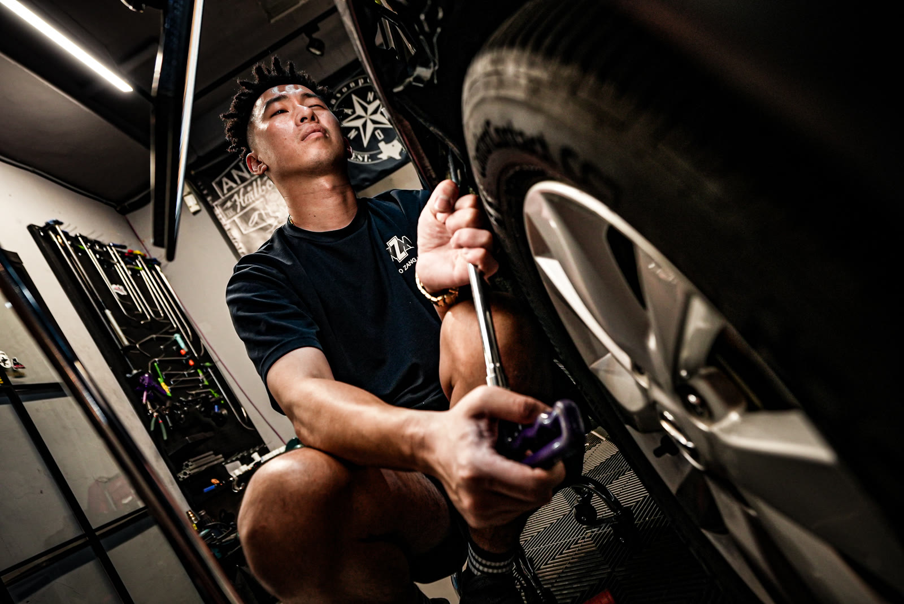
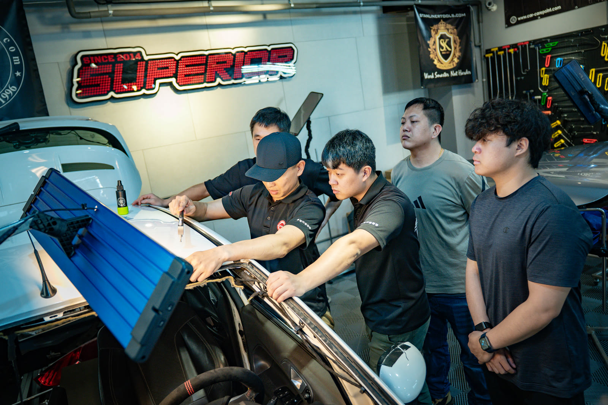
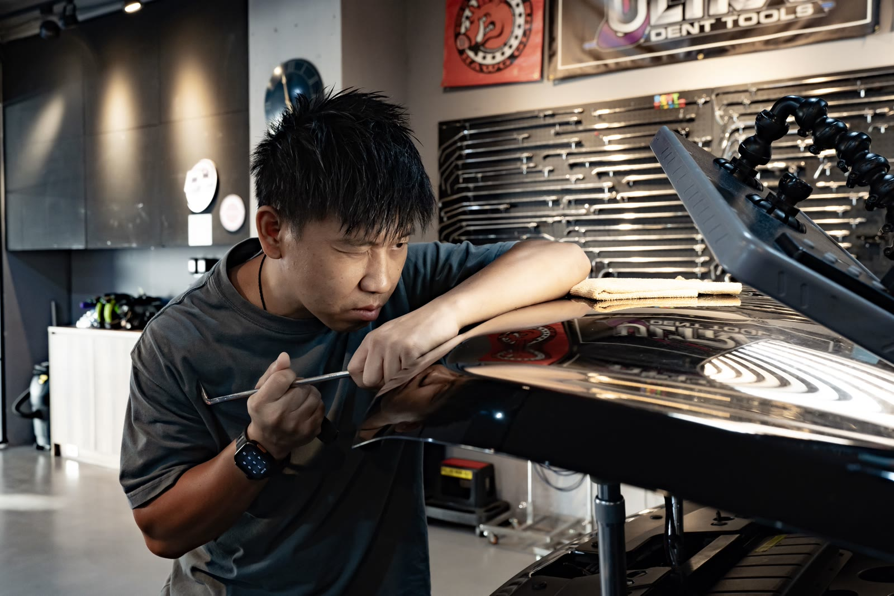
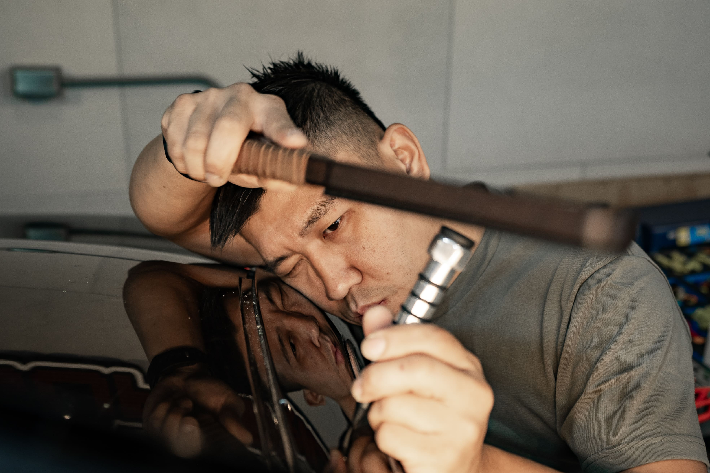
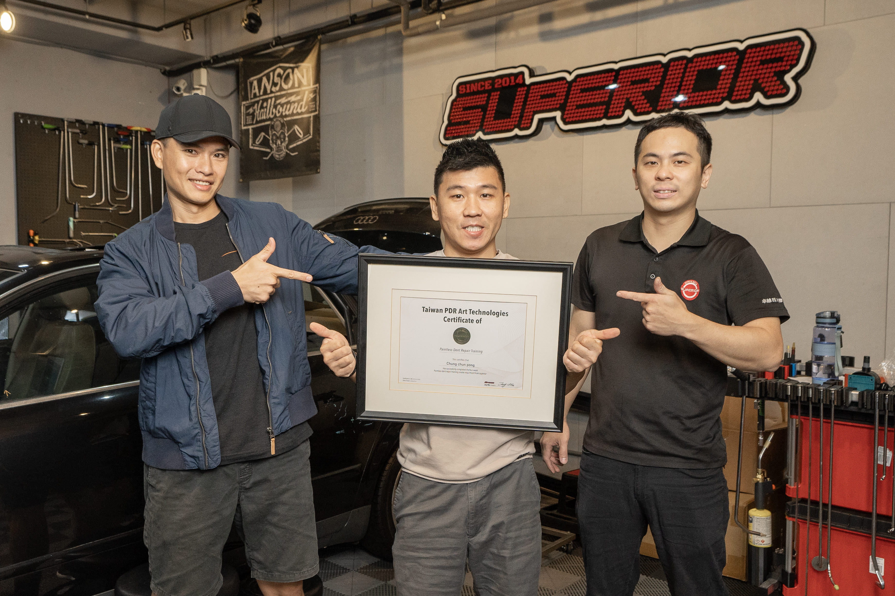
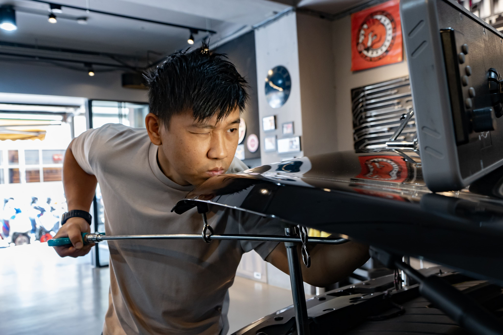
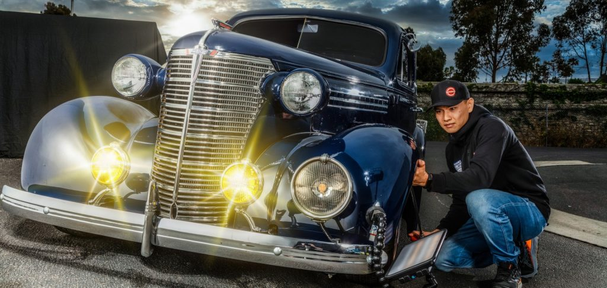

訓練現場
每一天都是真實技術的累積
四週課程中，您將在卓越的專業環境裡，與教官和同學肩並肩，面對各式各樣的真實凹痕挑戰。這裡的每一張照片，都是學員實際訓練的瞬間。




卓越最完整的PDR培訓課程。從中階基礎到高階折線、大面積凹痕、鋁合金修復，24天密集訓練讓您具備開業所需的全套技術，是成為專業PDR技師的最快路徑。
完整技術訓練課程涵蓋從初中階到高階、進階的全部技術體系，是卓越最旗艦的培訓課程。這不只是一堂課，而是一套完整的PDR技師養成計劃。
四週課程循序漸進：前兩週建立中階基礎，第三週進入高階折線與大面積凹痕，第四週掌握鋁合金修復、複雜凹痕與開業實戰知識。完整課程結束後，您將準備好出去面對各種大大小小的凹痕，並具備開設個人PDR工作室的技術與信心。



四個階段循序推進，每個階段都在前一週的基礎上深化技術。教官依學員進度彈性調整，確保每項技術都能真正掌握再往前推進。
深入理解凹痕成因的「火山口理論」——金屬在受撞擊後的形變結構，是所有修復判斷的根本依據。
了解金屬板金在修復過程中的收縮特性，以及連鎖效應對周圍板件的影響，學會預判與應對。
學習冷熱膠拉拔（Glue Pull）技術，在推桿無法到達的區域利用膠頭從外部拉出凹痕，擴展修復範圍。
精確找到各種板件結構中的槓桿施力點，善用物理原理讓修復更省力、更精準，減少二次損傷風險。
處理位於車門加強鋼樑、車頂橫樑等結構性位置的凹痕，這些位置因金屬強度高，需要特殊工具與技法應對。
線條凹痕（creases）是PDR中難度最高的類型之一，需要精準的力道控制和正確的推擊順序，此單元大量練習奠定技法基礎。
力道的精準控制是PDR最核心的技能。學習如何保持凹痕修復區域的清晰，避免任何凸點或凹點，讓板金平整如初。
從練習到完整完成一個線條凹痕的修復流程，掌握最後10%的精修技巧，將修復品質提升到專業技師等級。
引擎蓋為面積最大、最常受損的板件，綜合運用所有中階技法，以引擎蓋實車作為中階階段的整合練習與評量。
車身造型折線上的凹痕是PDR最具挑戰性的類型。學習如何精確處理深折線、深陵線凹痕，技術達到新高度，修出完美作品。
大面積凹痕（如冰雹大面積損傷、車頂大面積凹陷）需要系統化的恢復程序。學習評估、規劃與分區作業的完整邏輯。
以真實車輛進行大面積凹痕的密集練習，強化作業效率與精度，建立面對大量損傷時的信心與系統性思維。
槓桿拉拔器（Bridge Puller / Dent Lifter）適用於無法從內部進入的部位。學習正確使用各式拉拔工具組合，拓展可修復範圍。
在必要情境下（如密封結構、特殊通道），學習安全鑽孔的位置選擇、工具使用及後續修補，是完整技師必備的知識。
保險桿材質為塑料，修復原理與鋼板不同。學習熱修復、專用塑料工具的使用，以及保險桿常見凹痕的處理方式。
鋁合金板件（廣泛用於德系豪華車、電動車）特性與鋼板截然不同。深入理解鋁合金的彈性、記憶性與修復限制，避免不可逆損傷。
在真實鋁合金板件上進行密集練習，掌握輕觸多推、避免過推的技法節奏，讓鋁合金修復成為您的技術優勢。
利用熱風槍、紅外線加熱等熱加工輔助，降低金屬應力，協助完成在常溫下難以恢復的特殊凹痕，拓展修復可能性。
極尖頭工具（micro tips）用於處理極細微的高點修正與精修收尾，是決定最終修復品質的關鍵技法，考驗手感極限。
整合四週所有技法，挑戰複雜的大型凹痕——兼具深度、折痕、不規則形狀，測試學員的綜合判斷力與執行力。
如何以最高CP值組建適合自己業務型態的工具組，避免過度投資，用最小成本開始賺錢，再根據業務擴張逐步升級。
門邊（door edge）是碰撞最頻繁的部位之一，以門邊板金修復作為最終綜合評量，同時頒發結業證書，開啟PDR職涯。
「到這個階段，你將會得到更多的樂趣。你所學的一切都將在外面變得非常實用，而且你會看到你的信心大增。」— Superior PDR 訓練課程理念
結業時帶走完整的PDR工具組，包含基礎推桿、膠拉工具組、燈板，開業即可投入工作。
第四週依學員技術水準，安排在真實客戶車輛上工作，獲得寶貴的實戰作業經驗，是畢業前最重要的歷練。
完成全程並通過評量，頒發卓越PDR國際認可結業證書，在亞洲各地的業界同行中具備公信力。
加入卓越結業學員網絡，可隨時透過 LINE 向教官提問。開業後遇到難題，永遠有人支援你。
訓練空間與門市完全分離，最多一對二的小班制，保障不受干擾的高品質學習環境。
課程依每位學員進度彈性調整，確保每項技術確實掌握後再推進，不讓任何人帶著疑問結業。
卓越配備美國、歐洲與日本 PDR 訓練學校同款工具，從基礎推桿到最頂尖的進階工具，應有盡有。不只教技術，也教工具選購策略，讓您創業初期少走彎路。



四週課程中，您將在卓越的專業環境裡，與教官和同學肩並肩，面對各式各樣的真實凹痕挑戰。這裡的每一張照片，都是學員實際訓練的瞬間。



PDR資歷12年，Vale Master Craftman認證，曾赴美國 Dent Time 及日本 Dentshop 深造，卓越訓練中心最資深駐店技術主管。
前台灣板金國手——全國技能競賽汽車鈑金金牌、45 屆國際技能競賽汽車鈑金銀牌，VALE Master Craftman 認證，學習速度極快。